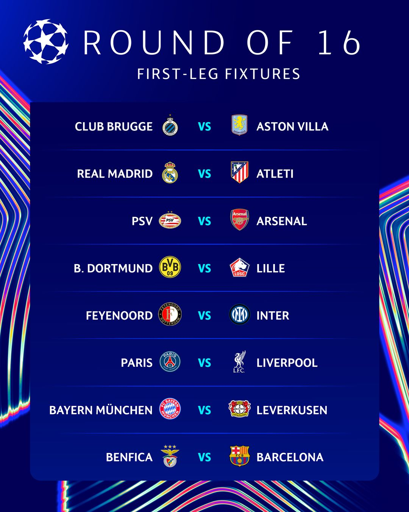
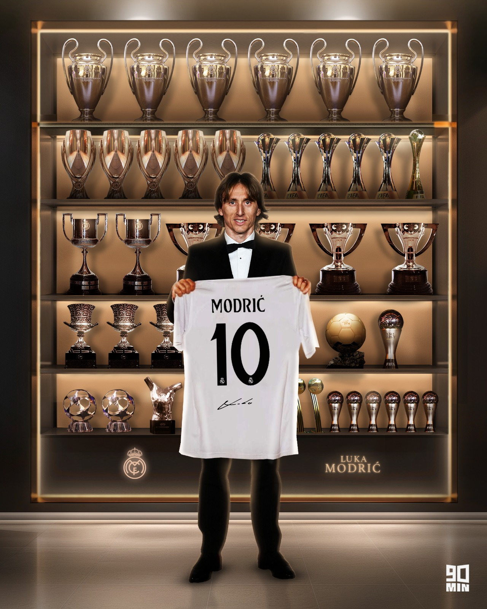
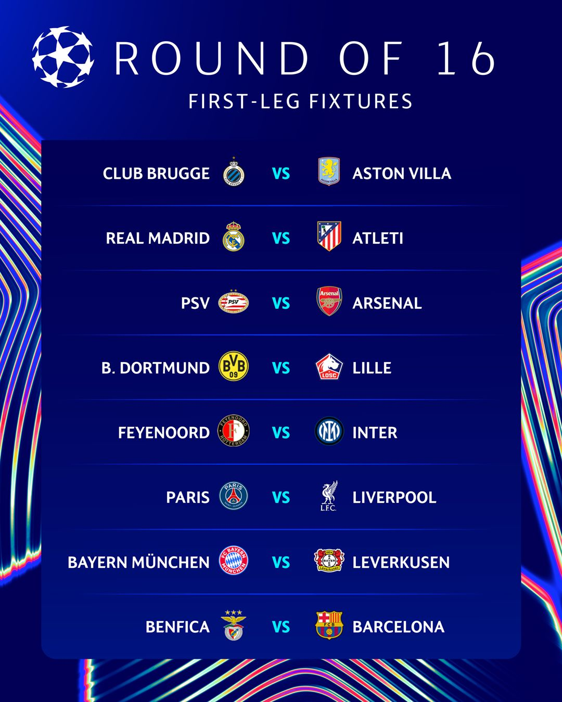
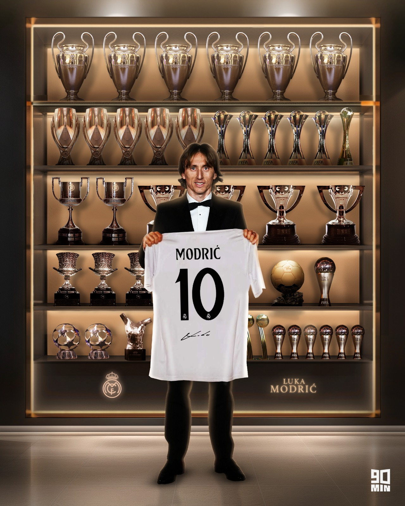

The Liberia National Team, nickname the Lone Stars, has rich history dating back to 1936 when the liberia Football Association (LFA) was founded.
Liberia joint the FIFA in 1964 and the confederation of African Football (CAF) in 1962.
Africa Cup of Nation: Liberia has qualified for the tournament twice, in 1996 and 2002. their best finish was 9th place in 2002.
FIFA Word Cup: Despite producing the 1995 FIFA word player of the year, George Weah, Liberia has never qualifed for the Word Cup.
Most Caps: Joe Nagbe hold record for most appearances with 77 caps.
Top Scorer: George Weah is the term's alltime leading scorer with 18 goals.
Current Squad: the team is currrntly led by coach Peter Butler and captain Allen Njie
Liberia is currently participating in the 2026 FIFA Word Cup qualification, competing in Group H against tearms like Tunisia and Malawi.
 
